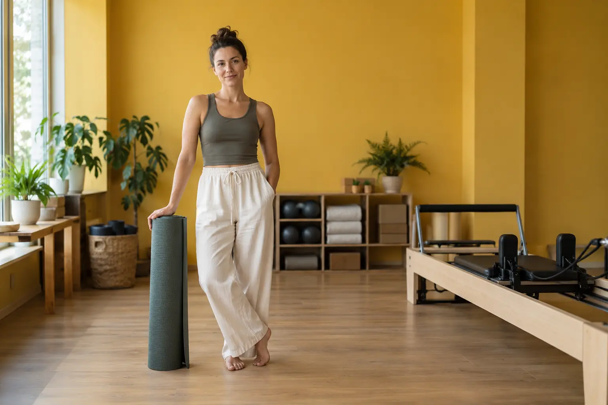

Joga ar pilatesas: pamokos pobūdis, inventorius ir pasirinkimo kriterijai
Autorius: Madbeauty redakcija · Numatyta 2026 m. gruodžio 8 d. 10:00 (Lietuvos laiku)
Palyginkite konkrečios pamokos stilių, tempą, formatą, inventorių ir instruktoriaus dėmesį. 45 min. trukmė nurodyta tik konkrečiam NHS vaizdo įrašui.

Trumpai: rinkitės pagal konkrečios pamokos turinį, o ne vien pavadinimą. Jogos stiliai skiriasi, o Pilateso aprašą verta vertinti pagal pamokos tikslą ir formatą. NHS pradedančiųjų Pilateso vaizdo įrašas orientuotas į pusiausvyrą, laikyseną, jėgą ir lankstumą; tai nėra įrodymas, kad viena praktika visiems tinkamesnė už kitą.
Ką reiškia jogos ar Pilateso pavadinimas?
Joga nėra vienas nekintamas pamokos formatas: skirtingose kryptyse gali keistis pozų pobūdis, intensyvumas, kvėpavimo ir dėmesio sutelkimo dalys. Todėl konkrečios pamokos aprašą verta tikrinti atskirai. Tai atitinka NCCIH jogos apžvalgą.
Pilateso pavadinimas taip pat nepasako visos užsiėmimo apimties. NHS pradedančiųjų Pilateso vaizdo įrašas nurodo pusiausvyrą, laikyseną, jėgą ir lankstumą kaip metodo kryptis. Šio konkretaus vaizdo įrašo trukmė yra 45 minutės, o jam rekomenduojamas kilimėlis; tai nėra bendras pamokų trukmės ar inventoriaus standartas.
Palyginkite konkrečius pasiūlymus tais pačiais kriterijais
Sudėkite du jus dominančius pamokų aprašus greta. Jei informacijos trūksta, palikite kriterijų neaiškų, užuot spėję iš pavadinimo.
- Pamokos turinys: kokie judesiai ar veiklos aiškiai aprašyti? Jogos atveju patikrinkite nurodytą kryptį; Pilateso atveju ieškokite konkretaus užsiėmimo tikslo.
- Tempas ir organizavimas: ar aprašytas tempas, judesių seka, pertraukos arba pamokos sandara? Šie aprašo požymiai priklauso konkrečiam užsiėmimui, o ne visai praktikai.
- Formatas ir priemonės: ar tai grupinė, ar individuali pamoka? Ar nurodytas kilimėlis arba kita įranga, ir kas ją suteikia?
- Instruktoriaus dėmesys: ar aprašyta, kaip paaiškinami judesiai, ar pateikiamos alternatyvos, ir kiek galimybių dalyviui užduoti klausimų? Nedarykite išvados, kad individualus formatas savaime geresnis.
Kilimėlis ir reformerio paminėjimas
Kilimėlis gali būti nurodytas konkrečios pamokos pasiruošimo sąlygose; NHS rekomendacija taikoma tik minėtam vaizdo įrašui. Jei Pilateso pasiūlyme minimas reformeris, patikrinkite paties teikėjo aprašą: kokia tai pamoka, kokios priemonės įtrauktos ir ko tikimasi iš dalyvio. Vien žodis „reformer“ neatskleidžia visos užsiėmimo eigos.
Pirmos pamokos pasirinkimo pavyzdys
Iliustracinė situacija: renkatės tarp jogos užsiėmimo ir pradedančiųjų Pilateso pasiūlymo. Pirmiausia palyginkite, ar abiejuose aiškiai nurodytas lygis ir tempas. Jogos apraše ieškokite konkrečios krypties bei pamokos sandaros; Pilateso apraše – nurodyto tikslo ir formato. Jei svarbu kilimėlis ar kita įranga, patikrinkite, ar ją reikia atsinešti. NHS 45 minučių trukmė apibūdina tik jo pradedančiųjų vaizdo įrašą, o ne šios hipotetinės pamokos trukmę.
Kaip nuspręsti
Pasirinkite tą pasiūlymą, kurio aprašas aiškiau atitinka jūsų pageidaujamą tempą, formatą, turinį ir pasiruošimą. Jei šios detalės nenurodytos, paprašykite teikėjo patikslinti būtent jas. Šis palyginimas nevertina medicininio pranašumo ir nenustato, kuri praktika tinka konkretaus žmogaus sveikatos būklei.
Ieškodami užsiėmimo pirmiausia pasirinkite grupę – jogą ar Pilatesą – ir tada miestą. Miesto pasirinkimas savaime nepatvirtina konkretaus užsiėmimo ar jo tvarkaraščio, todėl prieš planuodami tikrinkite konkretaus teikėjo informaciją.
Susiję gidai
Šaltiniai
- WHO · fizinis aktyvumas · www.who.int
- NCCIH · joga · www.nccih.nih.gov
- NHS · pilateso ir jogos pamokų formatai · www.nhs.uk
- NHS: Pilates formato apibrėžimas · www.nhs.uk